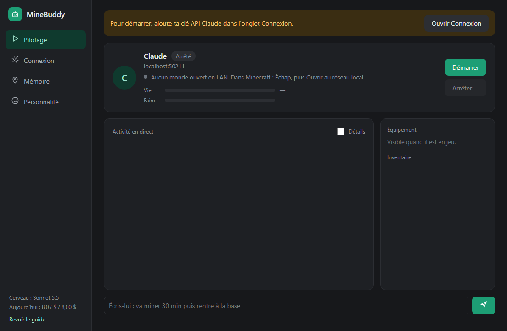
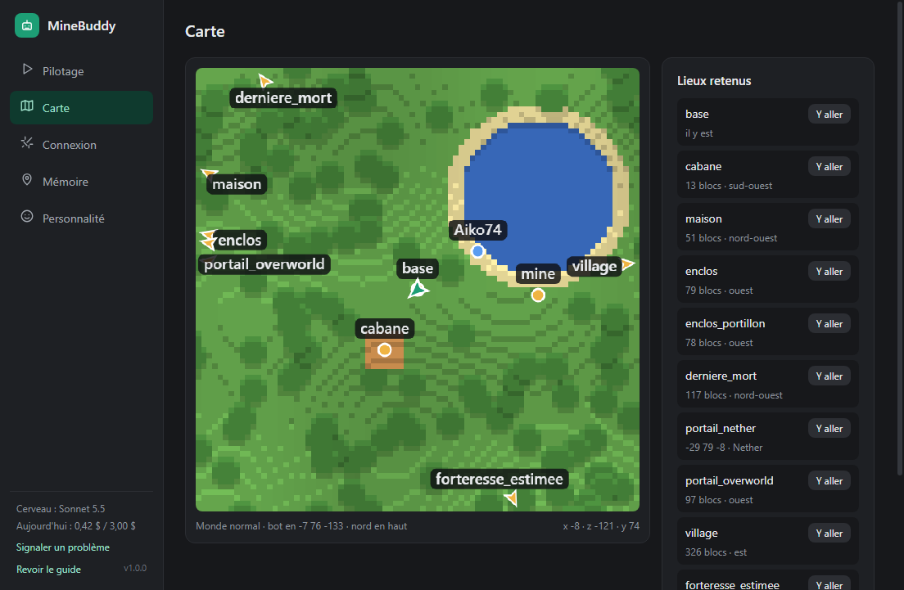
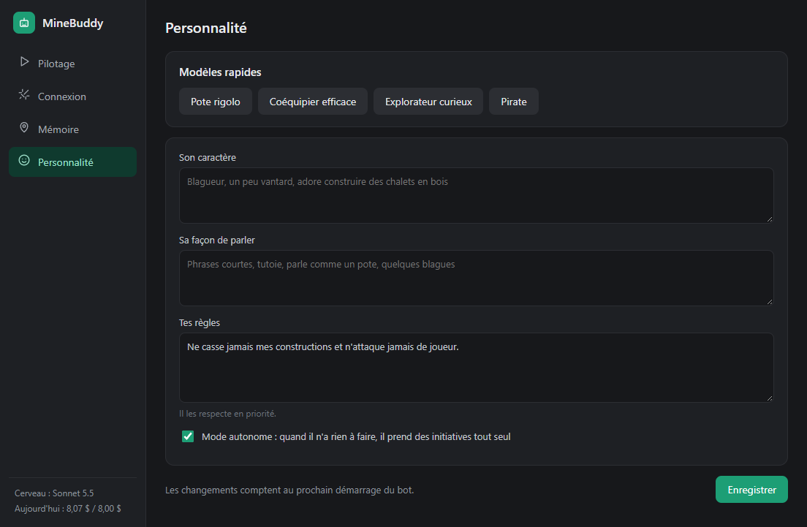
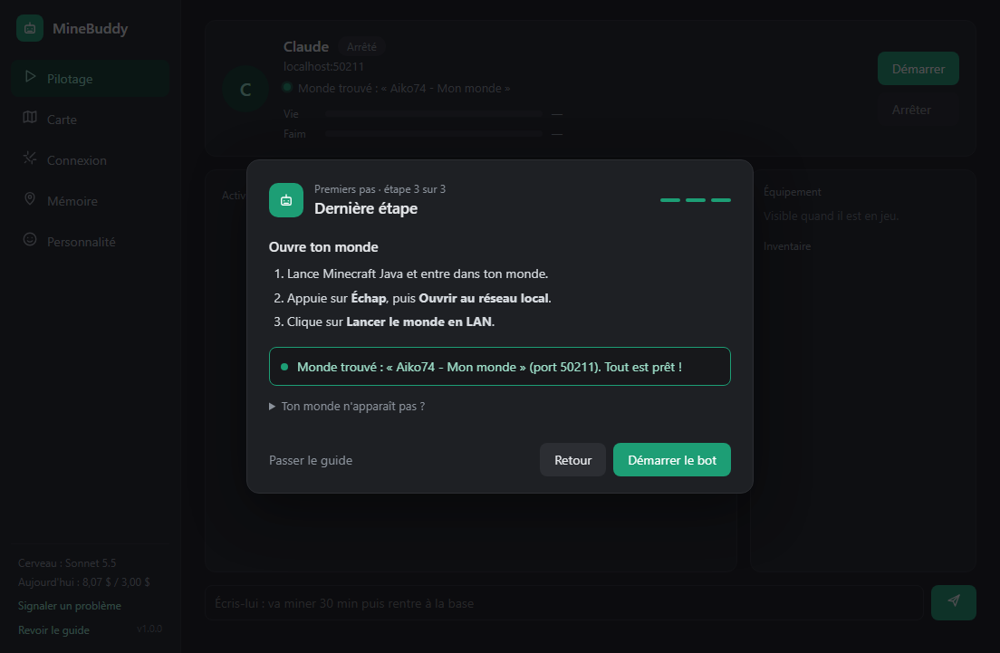

Il joue avec toi
Il te suit, te rejoint, te donne des objets et discute comme un pote : messages courts, en français. Tu lui choisis un caractère (rigolo, sérieux, pirate…).
Gratuit · open source · en français
Tu lui parles normalement dans le chat du jeu. Il comprend, joue avec toi, survit, construit, mine… et prend des initiatives tout seul. Pas une seule commande à apprendre.
Windows 10 / 11 · Minecraft Java Edition (testé en 26.1.2) · une clé API Claude

Aiko74tu peux aller chercher des diamants ? on se retrouve à la base dans 30 min
ClaudeOk ! Je prends des torches et je descends. À tout à l'heure à la base !
Un vrai coéquipier : il comprend ce que tu veux, même tapé vite avec des fautes, et découpe tout seul le travail en étapes.
Il te suit, te rejoint, te donne des objets et discute comme un pote : messages courts, en français. Tu lui choisis un caractère (rigolo, sérieux, pirate…).
Il mange, chasse, cuit sa viande, met son armure et se défend. La nuit, il s'abrite ou dort avec toi pour que la nuit passe. Coincé dans l'eau, il nage jusqu'à la berge.
Bois, pierre, minerais, puis n'importe quel objet : outils, armes, armures, four, lit… Il trouve la recette et ce qui lui manque.
Une cabane, un chalet complet sur un terrain qu'il aplanit lui-même, un enclos pour une ferme d'animaux qu'il attire et fait se reproduire.
« Va miner 30 min puis on se retrouve à la base » : il y va seul, mine jusqu'aux diamants en évitant la lave, et revient au rendez-vous.
Portail du Nether, troc avec les piglins, yeux de l'Ender, cristaux à l'arc… Pendant nos tests, il a battu le dragon.
Il ne casse jamais tes constructions et n'attaque jamais un joueur.
Aucune commande à apprendre : tu lui écris dans le chat du jeu, comme à un pote. Quelques exemples.
suis-moi
fais-toi une pioche en pierre
va miner 30 min puis rentre à la base
construis-nous un chalet ici
retiens cet endroit, c'est la base
me sios plus
dodo
t'as trouvé quoi aujourd'hui ?
Pas de fichier à modifier : tout se règle dans l'appli, et un guide en 3 étapes t'accompagne au premier lancement.



Télécharge l'installateur et lance-le. Windows peut afficher « Windows a protégé votre ordinateur » (l'appli n'est pas signée) : Informations complémentaires, puis Exécuter quand même.
Crée-la sur console.anthropic.com et colle-la dans le guide. Elle reste chiffrée sur ton PC.
Dans Minecraft : Échap, Ouvrir au réseau local, Lancer le monde en LAN. MineBuddy le trouve tout seul : clique sur Démarrer, ton pote arrive et te dit salut.

L'appli
Gratuite
Open source (licence MIT). Pas d'abonnement, pas de pub.
Le cerveau (Claude)
Payé à l'usage
Avec ta propre clé API, chez Anthropic. Ça dépend de combien il joue : pendant nos tests, une nuit entière de jeu autonome jusqu'au dragon a coûté environ 2,30 $.
Il faut être majeur pour créer un compte Anthropic. Plus jeune ? Demande à un adulte de s'en occuper avec toi.
Non. En LAN, le bot rejoint ton monde en mode hors ligne : pas besoin d'acheter un autre compte.
Minecraft Java Edition. Il a été testé en 26.1.2. Bedrock (console, mobile, Windows « Bedrock ») n'est pas compatible.
Non : il refuse de casser les blocs de construction (planches, briques, verre…) et n'attaque jamais un joueur, même si on insiste. Ces règles sont dans son code, pas seulement dans ses consignes.
Oui, comme un vrai joueur. Il retourne chercher son stuff tout seul. L'eau et les nuits sans armure restent ses points faibles : commence dans un monde de test pour le découvrir.
En LAN, c'est le plus simple. Sur un serveur, il faut que le serveur accepte les joueurs hors ligne, ou un compte Microsoft pour le bot (option « Compte Microsoft » dans l'appli).
Pas encore d'installateur : seulement Windows pour l'instant. Les développeurs peuvent le lancer depuis le code (Node.js).
Dans l'appli, clique sur Signaler un problème en bas à gauche : le rapport (sans ta clé) est copié, il ne reste qu'à le coller sur la page GitHub.
Le projet est gratuit. Pour le soutenir, le plus simple : une étoile sur GitHub, et en parler à tes potes.